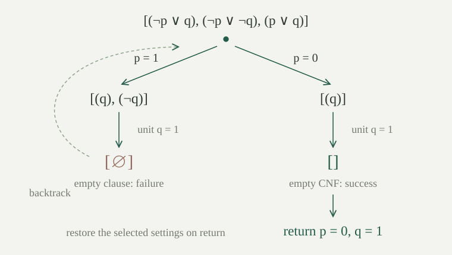

Use the literals and conjunctive normal forms on an atom set \(P\) with decidable equality. A literal is a pair \((p,b)\), where \(b\in\{0,1\}\); it means \(p\) when \(b=1\), and \(\neg p\) when \(b=0\). Its opposite is \(\overline{(p,b)}=(p,1-b)\). A clause is a finite list of literals, read disjunctively; a CNF \(\Gamma\) is a finite list of clauses, read conjunctively. Repetitions do not affect truth. Write \(v\models\Gamma\) when every clause has a literal \((p,b)\) with \(v(p)=b\). The empty CNF is true and an empty clause is false.
A partial assignment is a map \(\tau:P\to\{0,1,*\}\), where \(*\) means unassigned. A valuation \(v:P\to\{0,1\}\) extends \(\tau\) if \(\tau(p)=b\in\{0,1\}\) implies \(v(p)=b\). A literal is true under \(\tau\) if \(\tau(p)=b\), false under \(\tau\) if \(\tau(p)=1-b\), and otherwise unassigned.
The residual CNF \(\Gamma\vert\tau\) is obtained by discarding every clause with a true literal, then deleting every false literal from the remaining clauses. Thus a remaining clause consists exactly of its unassigned literals. All these operations inspect finite lists.
For every CNF \(\Gamma\), partial assignment \(\tau\), and valuation \(v\) extending \(\tau\),
A discarded clause has a literal already made true by \(\tau\), and that literal is true under every extending \(v\). In an undiscarded clause every assigned literal is false under \(v\). Therefore that clause has a true literal under \(v\) exactly when its remaining, unassigned part does. Apply this observation separately to every clause.
This also explains both terminal cases. If the residual is empty, every extension satisfies the original CNF. If the residual contains an empty clause, no extension satisfies it. An extension always exists: assign any fixed truth value to every still unassigned atom.
Let \(v[p:=b]\) mean the valuation that has value \(b\) at \(p\) and agrees with \(v\) elsewhere. The single-setting residual \(R_{p,b}(\Gamma)\) discards clauses containing \((p,b)\) and removes every literal on \(p\) from all other clauses. Equivalently it is \(\Gamma\vert\tau\) for \(\tau(p)=b\) and \(\tau(q)=*\) when \(q\ne p\). Deleting all occurrences is important when a list contains repetitions.
The support \(S(\Gamma)\) is the finite set of atoms occurring in its literals. The single-setting residual uses only atoms of \(S(\Gamma)\setminus\{p\}\). In particular it contains no occurrence of \(p\), even if \(p\) occurred with both signs in a clause: such a clause was discarded.
For every valuation \(v\), atom \(p\), truth value \(b\), and CNF \(\Gamma\),
A unit clause is a one-element list \([(p,b)]\). If it occurs in \(\Gamma\), every model of \(\Gamma\) has \(v(p)=b\), and \(\Gamma\) is satisfiable exactly when \(R_{p,b}(\Gamma)\) is satisfiable.
To satisfy a one-element disjunction its only literal must be true. A model of \(\Gamma\) thus has the required value at \(p\) and satisfies the residual by . Conversely any model \(v\) of the residual gives the model \(v[p:=b]\) of \(\Gamma\). This converse does not need the unit-clause assumption.
Repeatedly applying this rule is unit propagation. Every chosen unit atom occurs in the current residual and disappears after it is set. No later residual reintroduces it. Therefore every such propagation chain has distinct chosen atoms from the initial support, and has at most \(|S(\Gamma)|\) steps. Each step preserves satisfiability and is forced in every model compatible with earlier settings. Encountering an empty clause proves that no such model exists.
Apply unit propagation to \(\Gamma=[(p),(\neg p\lor q),(\neg q\lor r),(\neg r)]\), where \(p,q,r\) are distinct. What happens if the units are chosen first in the order \(p,q,r\)?
Setting \(p=1\) gives \([(q),(\neg q\lor r),(\neg r)]\). Setting \(q=1\) then gives \([(r),(\neg r)]\). Setting \(r=1\) discards \((r)\) but changes \((\neg r)\) to the empty clause. Hence the original CNF is unsatisfiable. Each displayed step sets a unit forced by the preceding residual. Choosing \(r=0\) from the original last clause instead leads to the same conclusion, though it propagates in the other direction.
A literal \((p,b)\) is pure in \(\Gamma\) if it occurs in some clause and its opposite occurs in no clause. More generally, if \((p,1-b)\) occurs nowhere, setting \(p=b\) preserves satisfiability, even if neither sign occurs. Precisely, every model \(v\) of \(\Gamma\) gives another model \(v[p:=b]\), and \(\Gamma\) is satisfiable exactly when \(R_{p,b}(\Gamma)\) is satisfiable.
Consider a true literal of any clause under \(v\). If its atom differs from \(p\), updating \(p\) leaves it true. If its atom is \(p\), its sign must be \(b\), by the absence of the opposite sign, so it becomes or remains true. Thus updating \(p\) preserves each satisfied clause. Apply to get a model of the residual. The reverse satisfiability direction again updates an arbitrary residual model at \(p\).
For distinct atoms \(p,q\), the positive literal \(p\) is pure in \([(p\lor q)]\). Must every model have \(p=1\)? Is the residual after that setting equivalent to the original CNF under all valuations?
No: \(p=0,q=1\) satisfies the original clause. The setting \(p=1\) discards its only clause, leaving the empty CNF, which is true even when \(p=q=0\); the original is false there. The pure rule preserves the existence of a model, and constructs one by changing \(p\). It does not force \(p\) in every old model. The exact equivalence of still holds on valuations extending the chosen setting.
For every CNF \(\Gamma\) and atom \(p\),
Fix a finite list \(L\) of atoms containing \(S(\Gamma)\). Define the ordered DPLL search \(D(L,\Gamma)\) to return either a valuation or the answer \(\mathrm{failure}\). Its recursive rules are as follows, tested in the displayed order.
An attempt at \(b\) calls \(D(K,R_{p,b}(\Gamma))\). If it returns \(v\), the attempt returns \(v[p:=b]\); if it fails, the attempt fails. These rules are a recursion on the length of \(L\), so they define a terminating algorithm. Every path makes at most \(|L|\) assignments. One may obtain \(L\) by listing the atoms of the finite input and deleting repetitions. Atoms outside this list receive the default value \(0\).
This variant applies a unit or pure rule when it concerns the current pivot \(p\). It does not first scan all other atoms for units. The separate unit-propagation process in can perform that simplification earlier, but is not an extra unstated step in this recurrence. The tests here inspect only literal equality and membership in finite lists.
Let \(\Gamma\) be a finite CNF, and let \(L\) contain every occurring atom. The ordered search \(D(L,\Gamma)\) terminates. If it returns a valuation \(v\), then \(v\models\Gamma\). It returns failure exactly when \(\Gamma\) is unsatisfiable. Its answer on atoms outside \(L\) is \(0\).
Induct on \(L\), with \(\Gamma\) varying over all CNFs supported by that list. The empty-CNF and empty-clause cases have exactly the stated truth behavior. If \(L\) is empty and neither terminal case has applied, every occurring literal would have an atom in the empty support, which is impossible. Hence every clause is empty; the lack of an empty clause then says that there are no clauses, contradicting this case. The third failure rule is therefore unreachable on a supported nonterminal input.
Now let \(L=p::K\). Every residual \(R_{p,b}(\Gamma)\) is supported by \(K\): it introduces no atoms, and removes \(p\). The induction hypothesis applies to both recursive calls. A successful call returns a model of the residual; restoring the selected setting gives a model of the parent CNF by .
For completeness, if a unit rule selects one branch, its satisfiability is equivalent to the parent's by . If an absent-opposite test selects one branch, use . Otherwise the two branches cover satisfiability by . The induction hypothesis says that each attempted branch fails exactly when it has no model. Thus a single forced or pure branch fails exactly when the parent has no model, and in the last case both branches fail exactly when the parent has no model.
The recurrence shortens \(L\) at every call. Finally, the returned valuation is built from the constant-zero valuation by updates at list members. An atom outside \(L\) is never updated, so its value remains zero. This proves every asserted part of the specification.
Let \(p,q\) be distinct. Run the ordered search with \(L=[p,q]\) on \(\Gamma=[(\neg p\lor q),(\neg p\lor\neg q),(p\lor q)]\). What model is returned?
There are no unit clauses and both signs of \(p\) occur, so first try \(p=1\). The residual is \([(q),(\neg q)]\). The positive unit for \(q\) selects \(q=1\), leaving an empty clause, so that branch fails. Try \(p=0\) instead. The first two original clauses disappear and the last becomes \((q)\). Its positive unit selects \(q=1\), leaving the empty CNF. Unwinding the updates returns \(p=0,q=1\), with every other atom zero. The original three clauses are then true, respectively because \(\neg p\), \(\neg p\), and \(q\) are true.
